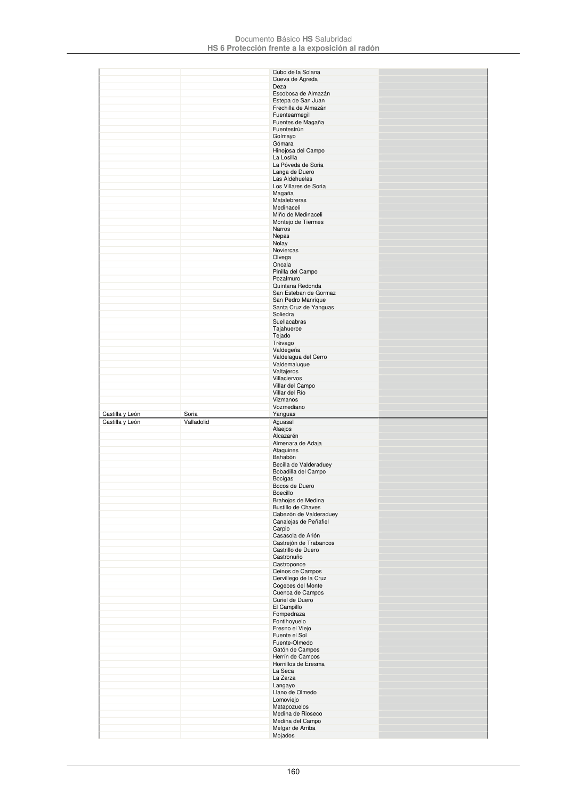

DB-HS Salubridad · edición 2022-06-14 · capa oficial
Documento DB-HS-oficial · SHA-256 del PDF 68df3caacc95f71aee2ec1ba7b2c65ae66155c21e3a8785521b8fdd4fd640d3b
Página física 160 de 184.
Copia fiel del PDF fuente · Fuente oficial
Ficha de la disposición en la fuente oficial
Formato: Texto de la página (Markdown)
Documento Básico HS Salubridad HS 6 Protección frente a la exposición al radón 160 Cubo de la Solana Cueva de Ágreda Deza Escobosa de Almazán Estepa de San Juan Frechilla de Almazán Fuentearmegil Fuentes de Magaña Fuentestrún Golmayo Gómara Hinojosa del Campo La Losilla La Póveda de Soria Langa de Duero Las Aldehuelas Los Villares de Soria Magaña Matalebreras Medinaceli Miño de Medinaceli Montejo de Tiermes Narros Nepas Nolay Noviercas Ólvega Oncala Pinilla del Campo Pozalmuro Quintana Redonda San Esteban de Gormaz San Pedro Manrique Santa Cruz de Yanguas Soliedra Suellacabras Tajahuerce Tejado Trévago Valdegeña Valdelagua del Cerro Valdemaluque Valtajeros Villaciervos Villar del Campo Villar del Río Vizmanos Vozmediano Castilla y León Soria Yanguas Castilla y León Valladolid Aguasal Alaejos Alcazarén Almenara de Adaja Ataquines Bahabón Becilla de Valderaduey Bobadilla del Campo Bocigas Bocos de Duero Boecillo Brahojos de Medina Bustillo de Chaves Cabezón de Valderaduey Canalejas de Peñafiel Carpio Casasola de Arión Castrejón de Trabancos Castrillo de Duero Castronuño Castroponce Ceinos de Campos Cervillego de la Cruz Cogeces del Monte Cuenca de Campos Curiel de Duero El Campillo Fompedraza Fontihoyuelo Fresno el Viejo Fuente el Sol Fuente-Olmedo Gatón de Campos Herrín de Campos Hornillos de Eresma La Seca La Zarza Langayo Llano de Olmedo Lomoviejo Matapozuelos Medina de Rioseco Medina del Campo Melgar de Arriba Mojados

Datos candidatos: compruebe celdas y notas en el PDF.